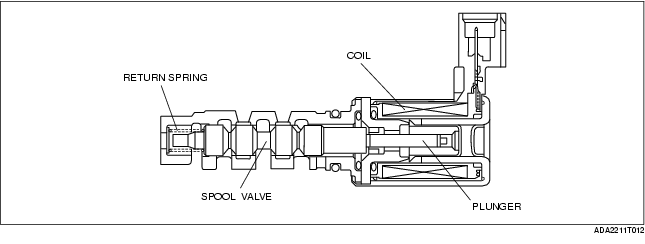

OIL CONTROL VALVE (OCV) CONSTRUCTION [ZY]
id0110001024c0
• The oil control valve (OCV) consists of a spool valve that switches the passages for engine oil, a coil that moves the spool valve, a plunger, and a return spring.
